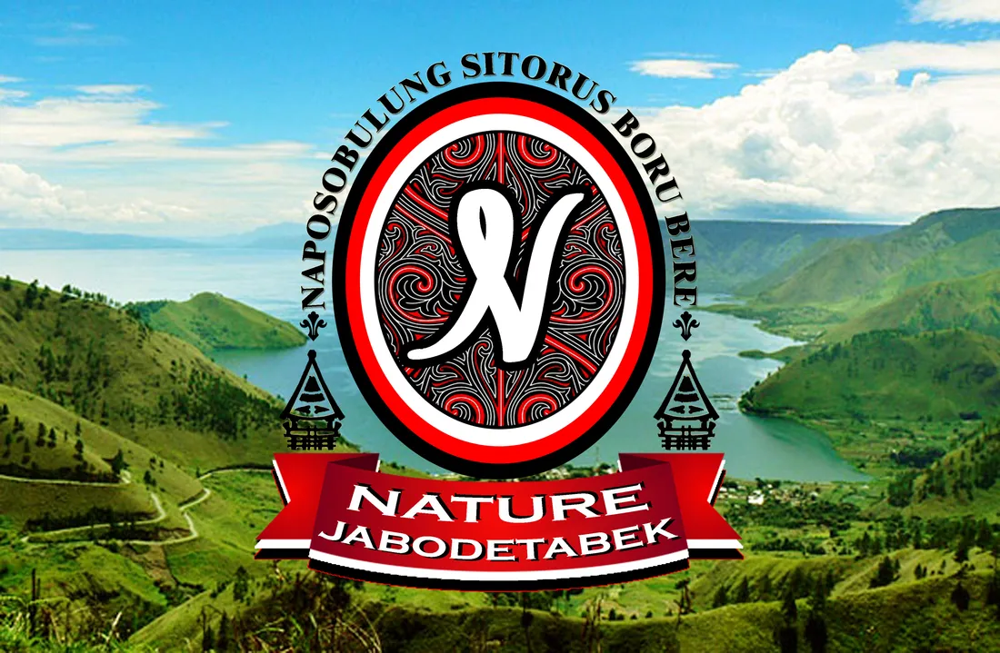

Kekeluargaan
Saling menghargai, merangkul, dan mendukung sebagai satu keluarga.
Naposobulung Sitorus Boru Bere Jabodetabek
Bersatu dalam kekeluargaan.
Bertumbuh dalam budaya.
NATURE Jabodetabek adalah wadah kebersamaan Naposobulung Sitorus, Boru, Bere, dan Ibebere di Jakarta, Bogor, Depok, Tangerang, dan Bekasi.
Berawal dari semangat generasi muda untuk memiliki ruang kebersamaan, NATURE hadir untuk mempererat hubungan kekeluargaan, menumbuhkan kepedulian, serta menjaga nilai budaya Batak melalui kegiatan kerohanian, olahraga, sosial, dan budaya.
Menjadi wadah generasi muda Sitorus, Boru, Bere, dan Ibebere yang solid, beriman, berbudaya, serta berdampak positif bagi anggota dan masyarakat.
Saling menghargai, merangkul, dan mendukung sebagai satu keluarga.
Bertumbuh bersama dengan nilai kerohanian sebagai landasan.
Aktif berpartisipasi dan bekerja sama dalam setiap kegiatan.
Menjaga dan meneruskan identitas serta nilai luhur budaya Batak.
Peka terhadap kebutuhan anggota dan masyarakat sekitar.
Jujur, bertanggung jawab, dan dapat dipercaya.
Setiap warna dan unsur membawa nilai yang menjadi bagian dari perjalanan NATURE.
Semangat, keberanian, dan kekuatan.
Ketulusan, kesucian, dan kejujuran.
Keteguhan, kebijaksanaan, dan wibawa.
Identitas budaya dan kesatuan NATURE.
Rumah kebersamaan dan akar kekeluargaan.
Harapan untuk terus tumbuh dan berkembang.
Perjalanan Punguan Naposo Sitorus dimulai pada tahun 2017. Melalui Musyawarah Nasional (Munas) di Universitas Mpu Tantular, Jakarta Timur, para naposo berkumpul dengan satu tujuan: membangun ruang kebersamaan bagi generasi muda pomparan Raja Sitorus.
Musyawarah yang dipimpin oleh Bapatua Rikson Sitorus, Pembina NATURE saat ini, menyepakati nama NATURE. Nama tersebut merupakan singkatan dari Naposo Sitorus Boru Bere dan menjadi identitas yang menyatukan seluruh anggotanya.
Sejak berdiri, NATURE terus bertumbuh melalui Perayaan Natal bersama para Natua-tua, ibadah bulanan, serta kegiatan olahraga seperti badminton dan futsal. Lebih dari sekadar organisasi, NATURE menjadi keluarga yang saling hadir dan mendukung dalam suka maupun duka.
Semangat ini terus diwariskan dengan mengajak seluruh pomparan Raja Sitorus yang masih naposo untuk bergabung, belajar adat, dan bersama-sama melestarikan budaya Batak.
Berjumpa, bertumbuh, dan merawat budaya melalui kegiatan yang bermakna.
Ruang untuk bertumbuh dalam iman melalui doa, pujian, renungan, dan persekutuan bersama.
Agenda segera hadirAktivitas olahraga bersama untuk menjaga kesehatan dan mempererat hubungan antaranggota.
Agenda segera hadirPerayaan penuh syukur melalui ibadah, pujian, kebersamaan, dan pelayanan sosial.
Agenda segera hadirPerjumpaan generasi muda melalui musik, tarian, dan tradisi untuk menjaga budaya Batak.
Agenda segera hadirPengurus yang melayani dan menggerakkan kebersamaan NATURE Jabodetabek.
Dokumentasi perjalanan dan momen kebersamaan kami.

Isi formulir pendaftaran dan pengurus kami akan menghubungi kamu untuk proses selanjutnya.
Isi Formulir PendaftaranBelum menemukan jawaban? Hubungi pengurus melalui kanal resmi kami.